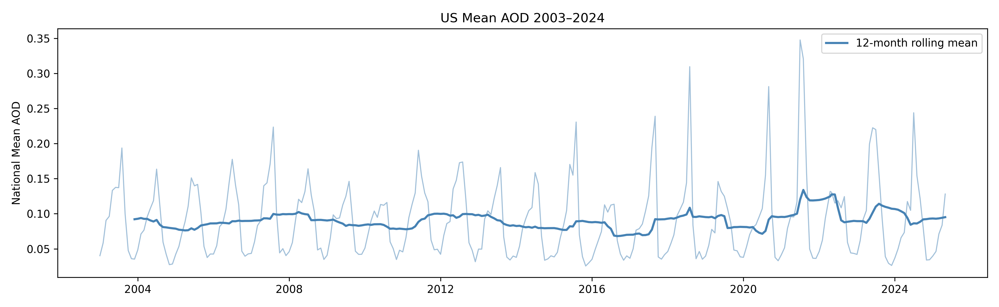
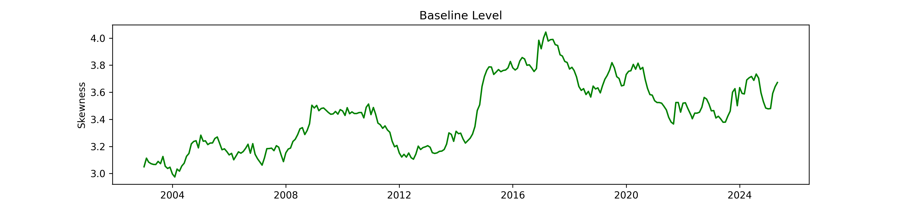
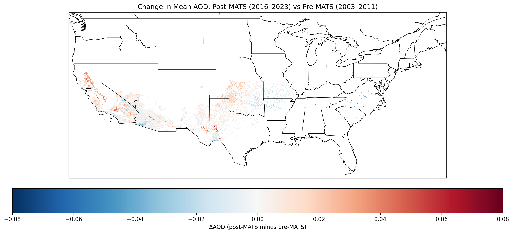
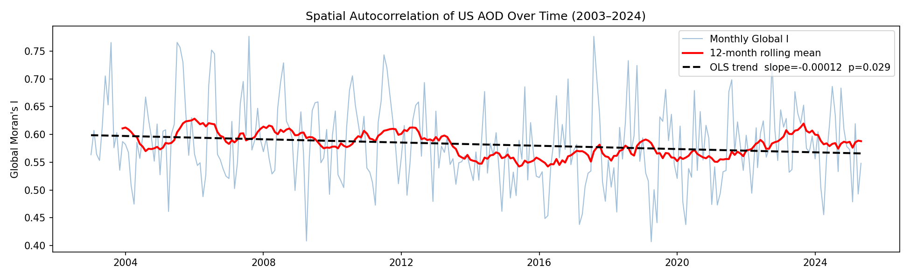
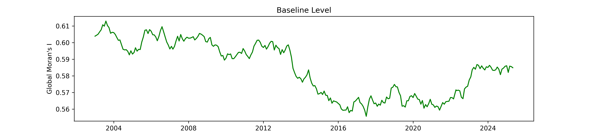
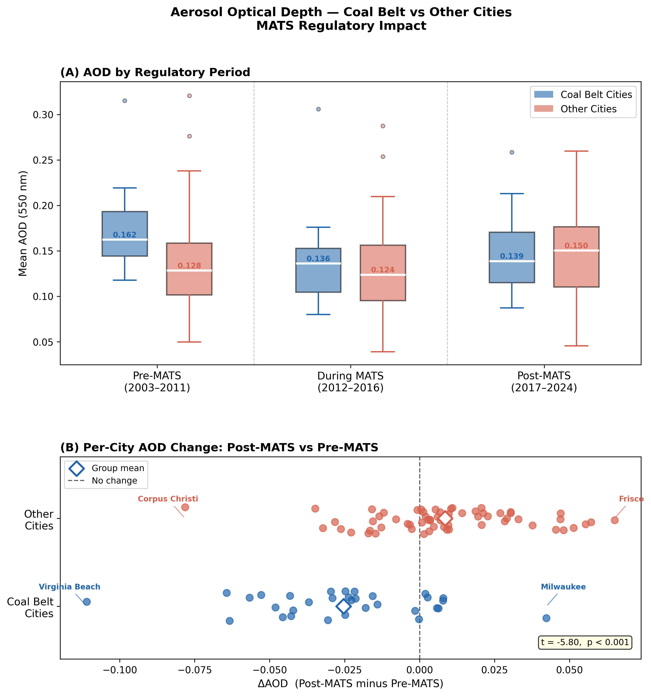
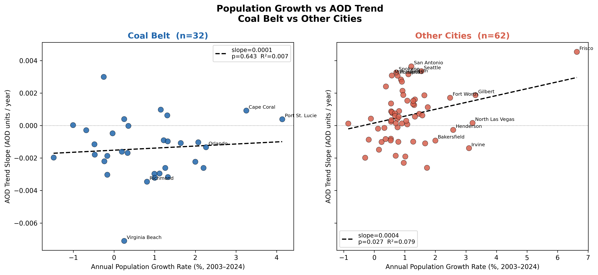

This project investigates 22 years of MODIS Aqua satellite aerosol retrievals over the contiguous United States. Aerosol Optical Depth (AOD) at 550 nm serves as the primary variable. It is a measure of atmospheric particle loading sensitive to both combustion emissions and wildfire smoke. The analysis begins with a national trend question and follows the data through a sequence of methodological decisions that ultimately point to the EPA's Mercury and Air Toxics Standards (MATS) coal plant retirement wave as a primary driver of regional air quality change. MODIS Aqua was chosen over MODIS Terra for its more reliable afternoon overpass characteristics; the NASA Dark Target team notes that Aqua is the more reliable sensor due to Terra detector degradation issues.[7] The Deep Blue / Dark Target merged retrieval was selected for improved spatial coverage: Dark Target performs well over dark vegetated surfaces while Deep Blue handles bright arid and urban areas, with the merge scheme selecting between them based on NDVI.[8, 9] 10 km city buffers are a pragmatic approximation of zonal AOD for each city that may overlap in dense corridors; MODIS AOD has retrieval limitations over bright surfaces;[8, 9] and wind trajectory analysis to formally attribute city AOD changes to specific upwind retirements was beyond scope.
Three analytical tools anchor the study: OLS time series regression applied to national and city-level AOD series, Holt-Winters exponential smoothing decomposition to isolate structural trend from seasonal signal, and Global and Local Moran's I to quantify changes in spatial clustering over time. ARIMA modeling was also attempted on both the mean and skewness series but proved uninformative—best-fit models could not capture the extreme events driving AOD dynamics and collapsed when forecasting beyond the observed period. This was itself telling; it suggested the extremes of AOD are governed by structural events such as policy changes and wildfire outbreaks rather than smooth autoregressive dynamics, which redirected attention toward those drivers.
The first question was whether national average AOD has trended over the study period. Annual means were regressed on time, both raw (p = 0.449, R² = 0.028) and after deseasoning by subtracting the long-run monthly climatology (p = 0.227, R² = 0.069). Neither returned a significant trend. Month-by-month OLS across all twelve calendar months also produced no significant slopes, though July through October showed visually increasing tendencies consistent with an intensifying western fire season. The Holt-Winters decomposition of the mean series (Figure 1) reveals a modest upward drift in the baseline level and clear summer peaks, but these features are not strong enough to overcome the noise in the annual trend test.

Skewness of the monthly AOD distribution told a different story. Annual mean skewness was regressed on time and returned a significant positive trend, both raw (p = 0.007, R² = 0.302) and deseasoned (p = 0.009, R² = 0.284). The Holt-Winters skewness decomposition (Figure 2) shows the baseline level rising over time, with June, August, and October showing the clearest per-month increases, which may be consistent with fire season starting earlier and lasting longer. A flat mean alongside rising skewness implies the AOD distribution is not stable: one part of the country is improving while another worsens, with the signals approximately canceling in the national average while compounding in the tail. If that divergence has geographic structure, it should be detectable as a spatial pattern rather than a temporal one. This inferential pivot motivated all subsequent spatial analysis.

Research into phenomena beyond wildfire that could produce geographically structured AOD change led to the Mercury and Air Toxics Standards (MATS), finalized by the EPA on February 16, 2012 (77 FR 9304).[1] MATS set emissions thresholds for mercury, acid gases, and other hazardous air pollutants from coal- and oil-fired power plants that many aging facilities could not meet economically. Between January 2015 and April 2016 alone, nearly 20 GW of coal capacity retired, with 26% of those retirements occurring in April 2015, the rule's initial compliance date.[2] Cross-referencing the Sierra Club's coal plant retirement map with the AOD spatial difference confirmed strong geographic alignment.[12]
The difference map (Figure 3) compares mean AOD over 2016–2023 (post-compliance) to 2003–2011 (pre-MATS baseline). The Southeast and lower Midwest—particularly Virginia, the Carolinas, Tennessee, Missouri, and Arkansas—show reductions of 0.05–0.08 AOD units. The West shows worsening consistent with post-2017 wildfire intensification. These two signals are the likely explanation for the flat national mean since they roughly cancel in the aggregate while producing the rising skewness observed above. Two regional features merit additional note. Western Oklahoma and Kansas show moderate worsening (ΔAOD +0.02 to +0.04) likely attributable to the Permian and Anadarko Basin oil and gas expansion that accelerated sharply after 2010—Permian Basin crude oil production was approximately four times its 2007 level by 2018,[3] bringing with it flaring, fugitive VOC emissions, and secondary aerosol formation—compounded by intensifying drought-driven agricultural dust in the southern Great Plains. Conversely, small pockets of improvement in Arizona could be consistent with the retirement of large western coal facilities during the same period.

To trace how spatial structure evolved continuously, Global Moran's I was computed monthly using a Queen's-case spatial weights matrix. Figure 4a shows the monthly Moran's I series with its 12-month rolling mean and OLS linear trend. The trend is significantly negative at the 0.05 level (slope = −0.0001/month, p = 0.029, R² = 0.018), indicating declining spatial clustering of AOD over time. Note that upon inspection of the summary table the Durbin-Watson statistic of 1.321 indicates mild positive autocorrelation in the residuals, so the p-value should be treated as approximate rather than exact; the visual trend is nonetheless clear.

The Holt-Winters decomposition of the Moran's I baseline level (Figure 5) reveals three structural phases underlying the trend. From 2003–2014, Moran's I held stable near 0.60, reflecting persistent Southeast coal combustion HH clusters. From 2014–2021 it declined to approximately 0.56 as those clusters dissolved during the MATS compliance window—notably, the decline aligns with actual plant retirements rather than MATS enactment, consistent with compliance economics forcing closures rather than announcement effects. From 2021 onward a partial recovery to ~0.58 possibly reflects new clustering driven by western wildfire smoke in the Pacific Coast and Pacific Northwest.

These spatial patterns are consistent with prior work using ground-based and modeled pollution fields. Henneman et al.[10] tracked SO₂-derived PM2.5 exposure from 480 US coal plants between 1999 and 2020, finding that retirements and scrubber installations drove sharp declines in eastern US exposure—particularly concentrated in the Southeast—closely mirroring the geographic footprint of AOD improvement observed here. The same group subsequently established that coal-derived PM2.5 carries roughly twice the mortality risk of PM2.5 from other sources, and that the post-2012 retirement wave produced measurable mortality reductions.[11] The present study complements that body of work by providing an independent satellite-based aerosol perspective across the full 2003–2025 MODIS Aqua record situating the MATS signal within longer-term trends.
To test the MATS hypothesis quantitatively, monthly AOD was extracted for each of the top 100 US cities using 10 km buffers, and OLS trend slopes were estimated for three regulatory periods: Pre-MATS (2003–2011), During MATS (2012–2016), and post-MATS (2017–2024). Cities were classified as coal belt if their state's electric utilities drew primarily on Appalachian or Illinois Basin bituminous coal—the fuel type most directly targeted by MATS—using EIA 2008 electric power sector consumption data.[4] States consuming primarily subbituminous or lignite coal were excluded as they faced different compliance economics. Coal belt states: VA, WV, KY, TN, NC, SC, GA, FL, AL, OH, PA, IN, IL, MI, WI, MD.
Figure 6 shows both the period-level boxplot comparison and the per-city AOD change distribution. Pre-MATS, coal belt cities had a higher median AOD than other cities (0.162 vs 0.128), consistent with heavier coal combustion in those regions. Post-MATS, coal belt cities not only improved but crossed below the other-cities median (0.139 vs 0.150)—a complete reversal. The per-city delta distribution (post minus pre) for coal belt cities is almost entirely left of zero while other cities straddle zero with a slight rightward lean. A two-sample t-test on per-city ΔAOD returns t = −5.80, p < 0.001, confirming the divergence is not due to chance.

Faster-growing cities might worsen simply through increased vehicle emissions and energy demand, independent of coal policy. Annual population growth rates from Census intercensal estimates[6] were regressed against city-level AOD slope. The pooled OLS returned a nominally significant result (slope = +0.0004, p = 0.022, R² = 0.056, N = 94), but visual diagnostics flagged Frisco, TX and Virginia Beach, VA as high-leverage points. Removing both collapses the relationship to p = 0.302, R² = 0.012.
Stratifying by coal belt membership (Figure 7) resolves the structure somewhat. Within coal belt cities, population growth explains nothing about AOD trend direction (p = 0.643, R² = 0.007)—cities ranging from declining population to rapid growth all improved. Among other cities, a weak positive relationship is detectable at the 0.05 level (p = 0.027, R² = 0.079), possibly consistent with mild urbanization-driven worsening in the absence of a MATS effect. The MATS retirement signal dominated any emissions increase attributable to demographic change within coal belt cities due to the large structural change in energy consumption composition.

The national mean AOD is flat over 2003–2025 (p = 0.449), but this conceals a significant and structurally meaningful divergence. The AOD distribution has become significantly more right-skewed (p = 0.007, R² = 0.30), Global Moran's I has declined in three phases tracking the MATS compliance window, and coal belt cities shifted from higher to lower AOD relative to other cities (t = −4.56, p < 0.001)—a reversal that is independent of population growth. Together these findings support a causal interpretation of MATS-driven coal plant retirements[1, 2] as a primary driver of regional AOD improvement in coal belt states, partially offset nationally by worsening wildfire activity in the West. There is somewhat of a Simpson's Paradox here: when you look at AOD nationally you see no real change, but when viewed in parts, opposing processes emerge that tell a story of the East becoming cleaner and the West getting smokier.